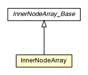

pt.ist.fenixframework.adt.bplustree
Class InnerNodeArray

java.lang.Object
 pt.ist.fenixframework.core.AbstractDomainObject
pt.ist.fenixframework.adt.bplustree.AbstractNodeArray_Base
pt.ist.fenixframework.adt.bplustree.AbstractNodeArray
pt.ist.fenixframework.adt.bplustree.InnerNodeArray_Base
pt.ist.fenixframework.adt.bplustree.InnerNodeArray
pt.ist.fenixframework.core.AbstractDomainObject
pt.ist.fenixframework.adt.bplustree.AbstractNodeArray_Base
pt.ist.fenixframework.adt.bplustree.AbstractNodeArray
pt.ist.fenixframework.adt.bplustree.InnerNodeArray_Base
pt.ist.fenixframework.adt.bplustree.InnerNodeArray
- All Implemented Interfaces:
- Serializable, Iterable, DomainObject
public class InnerNodeArray
- extends InnerNodeArray_Base
Inner node of a B+-Tree. These nodes do not contain elements. They only
contain M keys (ordered) and M+1 sub-nodes (M > 0). The n-th sub-node will
contain elements whose keys are all less than the n-th key, except for the
last sub-node (L) which will contain elements whose keys will be greater
than or equal to the M-th key.
- See Also:
- Serialized Form
insert
public AbstractNodeArray insert(Comparable key,
Serializable value)
- Description copied from class:
AbstractNodeArray
- Inserts the given key-value pair and returns the (possibly new) root node
remove
public AbstractNodeArray remove(Comparable key)
- Description copied from class:
AbstractNodeArray
- Removes the element with the given key
get
public Serializable get(Comparable key)
- Description copied from class:
AbstractNodeArray
- Returns the value to which the specified key is mapped, or
null if this map contains no mapping for the key.
getIndex
public Serializable getIndex(int index)
- Description copied from class:
AbstractNodeArray
- Returns the value at the given index
removeIndex
public AbstractNodeArray removeIndex(int index)
- Description copied from class:
AbstractNodeArray
- Returns the value that was removed from the given index
containsKey
public boolean containsKey(Comparable key)
- Description copied from class:
AbstractNodeArray
- Returns
true if this map contains a mapping for the specified key.
size
public int size()
- Description copied from class:
AbstractNodeArray
- Returns the number os key-value mappings in this map
iterator
public Iterator iterator()
dump
public String dump(int level,
boolean dumpKeysOnly,
boolean dumpNodeIds)
Copyright © 2013. All Rights Reserved.